Planejamento
Nesta imersão, o médico acompanhará todas as etapas do procedimento, desde a seleção do paciente e escolha da área doadora.
Imersão presencial para médicos
Do planejamento à aplicação avançada da gordura autóloga na face, com abordagem de Macrofat, Microfat e Nanofat, tecnologias associadas e demonstração prática e hands-on supervisionado.
Teoria + demonstração em paciente + hands-on.
A lipoenxertia autóloga permite trabalhar diferentes objetivos a partir do próprio tecido adiposo do paciente: reposição volumétrica, restauração estrutural, refinamento de contornos e regeneração tecidual.
Nesta imersão, o médico acompanhará todas as etapas do procedimento, desde a seleção do paciente e escolha da área doadora.
Acompanhe a coleta, o processamento e a aplicação da gordura em uma experiência orientada por etapas.
Entenda as diferenças entre Macrofat, Microfat e Nanofat, suas indicações e a escolha conforme a região e o objetivo do tratamento.
Sobre o curso
Nesta imersão, o médico acompanhará todas as etapas do procedimento, desde a seleção do paciente e escolha da área doadora até a coleta, processamento e aplicação da gordura.
O curso aborda de forma prática as diferenças entre Macrofat, Microfat e Nanofat, suas indicações e a escolha da técnica de acordo com a região e o objetivo do tratamento.
Conteúdo programático
Fundamentos da lipoenxertia autóloga
Biologia do tecido adiposo e fundamentos da utilização da gordura na volumização e medicina regenerativa.
Indicações e planejamento
Seleção do paciente, indicações, contraindicações, avaliação facial e definição da estratégia de tratamento.
Anatomia aplicada
Anatomia das áreas doadoras e receptoras, planos de aplicação e planejamento das diferentes regiões da face.
Coleta da gordura
Escolha da área doadora, técnica de obtenção e cuidados para preservação do tecido adiposo.
Processamento
Purificação, preparo e processamento da gordura de acordo com a finalidade clínica.
Técnicas de aplicação
Escolha de cânulas, planos anatômicos, distribuição do enxerto e estratégias para obtenção de resultados naturais.
Segurança
Prevenção de complicações, cuidados técnicos durante o procedimento e discussão dos principais riscos relacionados à lipoenxertia facial.
Macrofat, Microfat e Nanofat
O processamento da gordura determina características diferentes do enxerto e, consequentemente, diferentes possibilidades de utilização.
Partículas adiposas maiores, em geral acima de aproximadamente 2,4 mm, com maior preservação da arquitetura do tecido adiposo.
É utilizada principalmente quando há necessidade de:
• maior reposição volumétrica;
• restauração estrutural;
• preenchimento de áreas que demandam maior quantidade de tecido;
• projeção e reconstrução de contornos.
Principal objetivo: volume e estrutura.
Gordura processada em partículas menores, geralmente na ordem de aproximadamente 1 mm, dependendo da técnica e do sistema utilizado.
Mantém adipócitos viáveis e permite uma aplicação mais delicada e controlada.
É especialmente utilizada para:
• volumização facial;
• restauração de compartimentos de gordura;
• correção de depressões;
• refinamento dos contornos;
• tratamento de regiões anatômicas mais delicadas.
Principal objetivo: volumização precisa e refinamento facial.
Obtida após maior processamento mecânico e emulsificação da gordura, resultando em partículas geralmente inferiores a aproximadamente 500–600 μm.
Durante esse processamento ocorre redução importante da função volumizadora dos adipócitos.
A Nanofat preserva componentes da fração estromal vascular, incluindo populações de células estromais/mesenquimais derivadas do tecido adiposo, células progenitoras e fatores bioativos relacionados aos processos de reparação e regeneração tecidual.
É utilizada principalmente para:
• melhora da qualidade da pele;
• regeneração tecidual;
• remodelação da matriz extracelular;
• estímulo à angiogênese;
• melhora de textura e características cutâneas.
Principal objetivo: regeneração e qualidade tecidual, sem finalidade primária de volumização.
As dimensões são aproximadas e podem variar de acordo com a técnica de coleta, processamento, filtragem e sistema utilizado.
Áreas de aplicação facial
O curso abordará planejamento e utilização da gordura autóloga em diferentes regiões da face.
Região temporal.
A-frame e sulco palpebral superior.
Região infraorbital e olheiras.
Região malar.
Sulco nasolabial.
Terço médio da face.
Região mandibular.
Região do mento.
Contorno facial.
A escolha entre Macrofat, Microfat ou Nanofat será discutida de acordo com a anatomia, o plano de aplicação e o objetivo de cada região.
Tecnologias associadas
O curso também abordará a utilização da Nanofat em protocolos associados a tecnologias utilizadas para remodelação e regeneração da pele.
Demonstração prática em paciente
Os alunos acompanharão todas as etapas do procedimento:
Avaliação, planejamento, coleta, processamento, preparo e aplicação com discussão das decisões tomadas em cada etapa.
Hands-on supervisionado
Após a demonstração, os participantes da modalidade prática realizarão o procedimento sob supervisão.
O objetivo é permitir contato direto com as técnicas apresentadas durante a imersão, desde o planejamento até a aplicação.
Para quem é o curso
Curso presencial destinado exclusivamente a médicos que desejam incorporar ou aperfeiçoar técnicas de lipoenxertia facial e medicina regenerativa em sua prática clínica.
Conhecimento integrado à avaliação, à escolha da técnica e à definição de estratégias para diferentes regiões da face.
Da volumização à regeneração, com demonstração em paciente e modalidade prática supervisionada.
Uma imersão completa em gordura autóloga. Da volumização à regeneração.
Para estrutura.
Para volumização precisa.
Para regeneração tecidual.
Tudo integrado ao planejamento facial e à prática clínica.
Local do curso
A imersão presencial acontece em uma estrutura hospitalar moderna, preparada para aulas, demonstrações e prática clínica supervisionada.
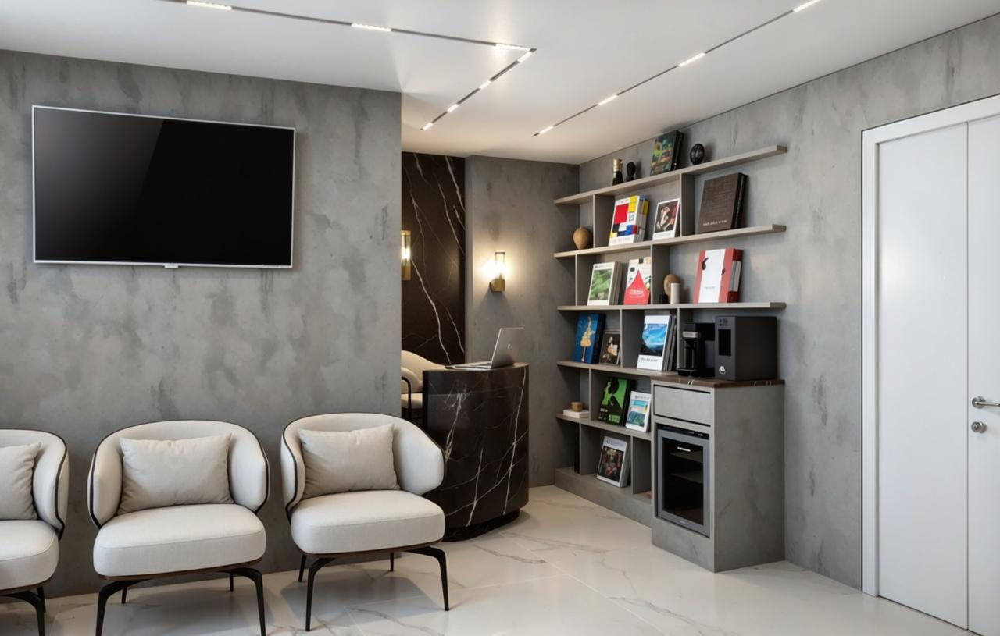
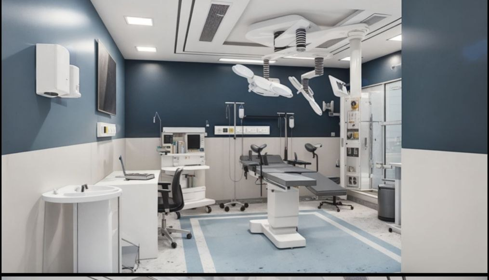
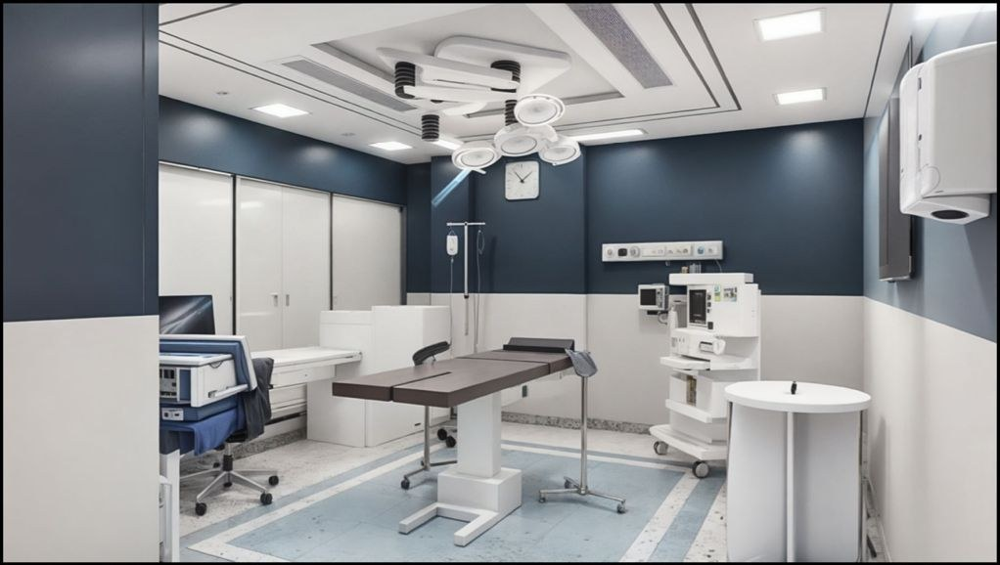
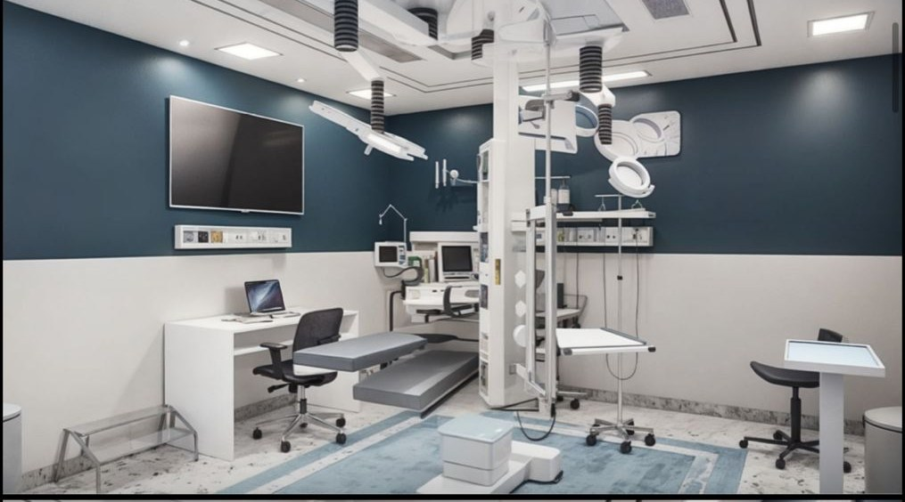
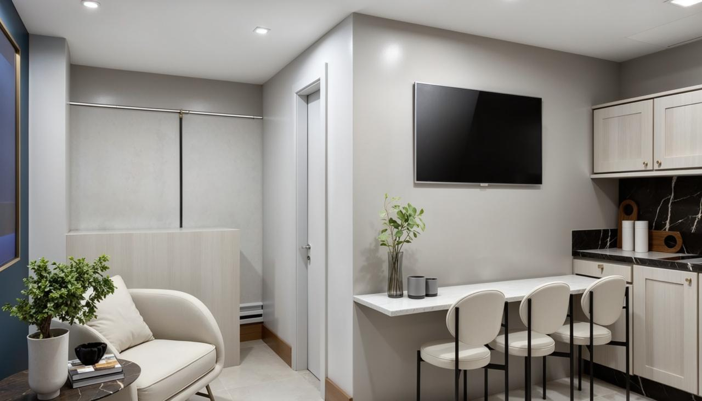
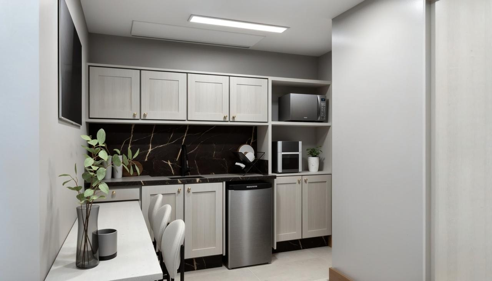
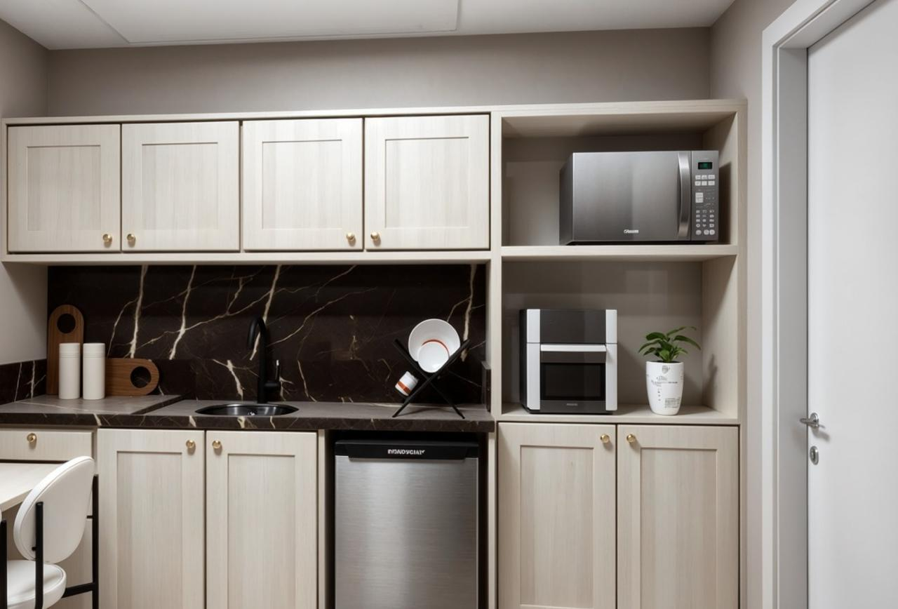
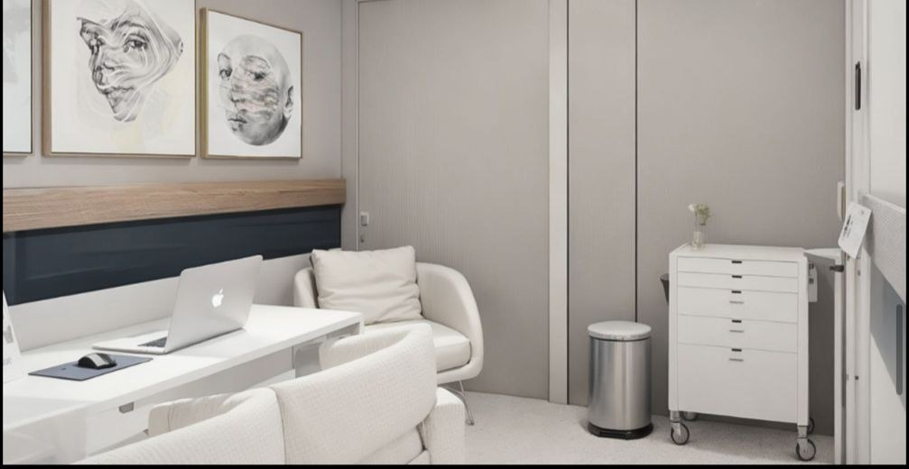
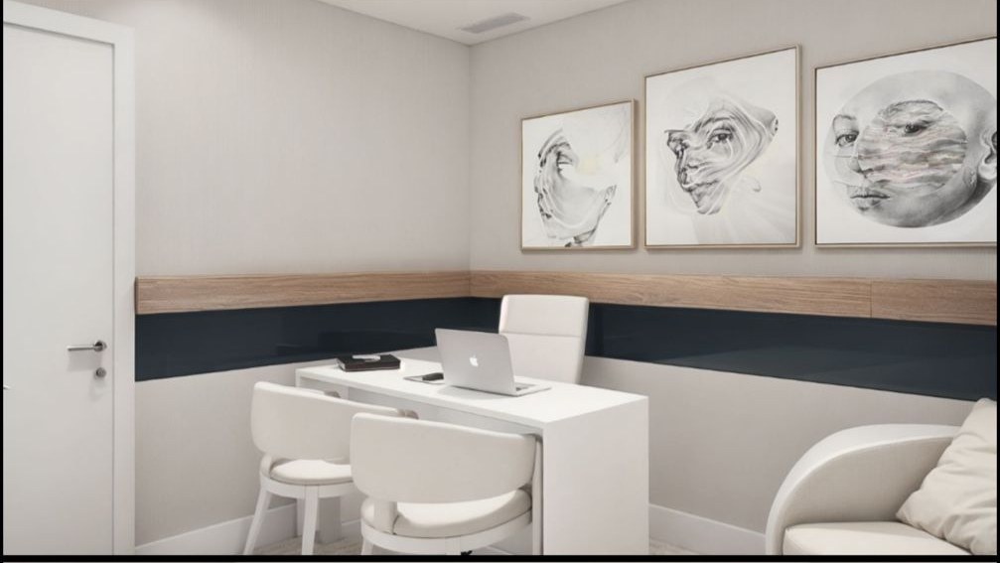
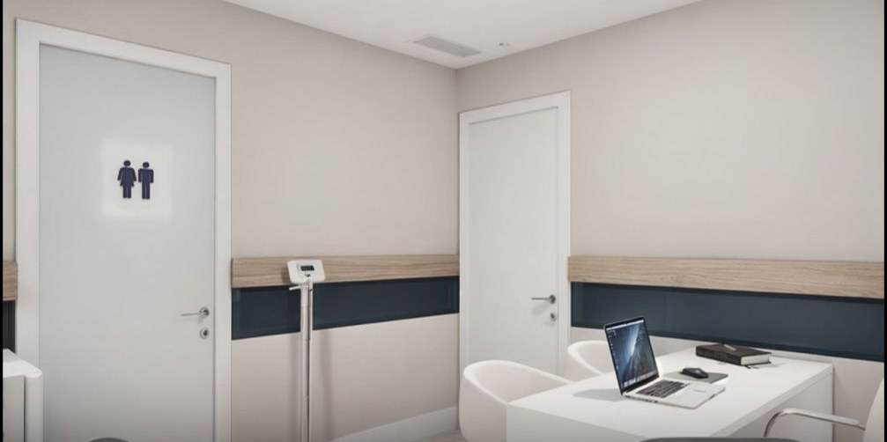
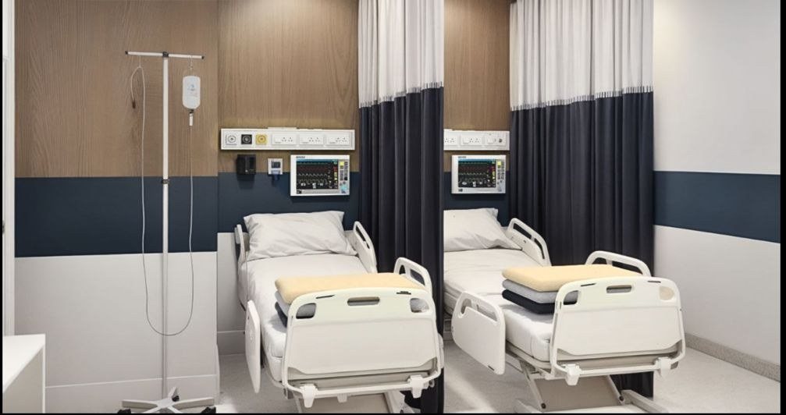
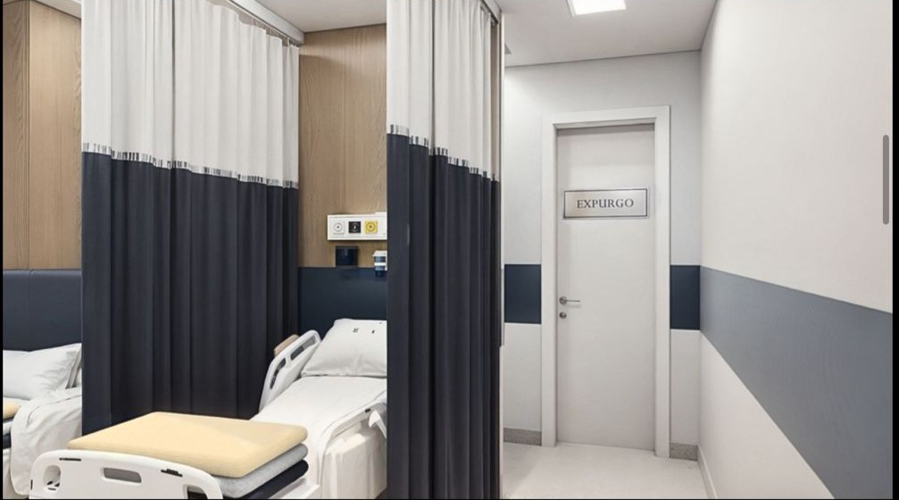
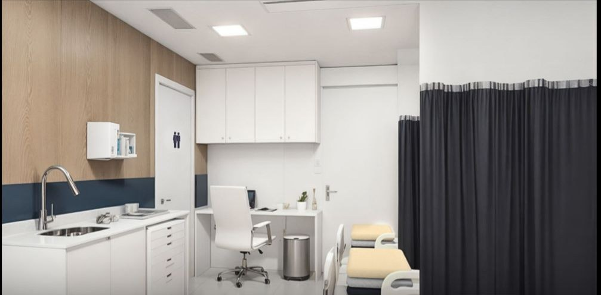
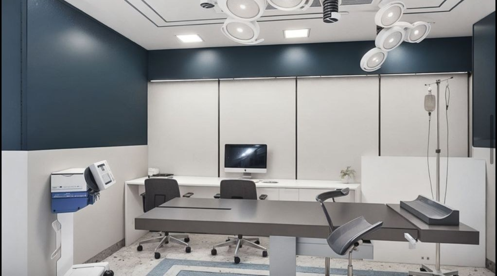
Investimento
Curso de 1 dia conduzido por Dr. Laertes Thomaz Júnior, com certificação final e feedback individualizado.